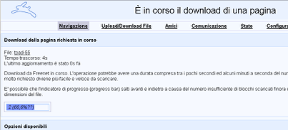

La rete Freenet, così come I2P, è una tecnologia basata
sul peer-to-peer che usa le risorse dei suoi utenti banda e spazio per
creare uno strumento di comunicazione con standard di sicurezza elevati.
Freenet non è un sistema di proxing pensato per la navigazione clearnet,
dunque la sua spiegazione si limiterà alla navigazione del suo Deep Web.
Il progetto Freenet nasce come progetto libero ed esente da ogni tipo di
censura. La rete Freenet e la più anziona poichè nacque nel 2000.
Il sistema e basato interamente sulla tecnolgia peer-to-peer dunque rende difficile
(tecnicamente) risalire all'autore del contenuto.
Il network I2P è stato creato per stare in contatto coi propri amici
(se si vuole una rete più sicura),oppure geolocalizzato con gli utenti della rete
(cosi da avere un network più veloce e stabile). I nodi sono collegati tra
di loro ma nessuno sa il destinatario ne il mittente.
A differenza di TOR e I2P il sistema si installa come proxy interno
(tramite questo indirizzo qui)
Raggiunta la dashboard iniziale all'indirizzo http://localhost:8888 (o
http://127.0.0.1:8888 come preferite) verrete riportati verso una lista iniziale di link a
cui si può accedere, esattamente come I2P.
È possibile che aprendo un link questo non si carichi subito ma mostri una screen
che indica un timeout:

L'ecosistema di Freenet vive grazie alla sua community che costantemente genera nuovo materiale.La maggior parte del materale e propagandistico, politico e segnalazioni di abusi dai governi,tuttavia sono presenti anche, market pornografia e materiale visivamente shockante.
I freesites sono l'essenza del Freenet network. Essi vengono creati dagli utenti e,
una volta seguiti i passaggi per la creazione verrano visualizzate sulla dashboard.
Le liste sono divise in tre grandi gruppi
Freenet è dotato di suite di programmi per consentire comunicazione fra più utenti.
Nel freenet lo strumento ufficiale per comunicare è freemail.
Partiamo dal pressuposto che la freenet e molto sicura se usata al meglio .
Considerate che il livello della vostra sicurezza e proporzionale al numero di
"amici" collegati se non gli avrete sarete collegati a degli sconosciuti.
Per questo Freenet può essere configurato secondo le proprie discrezioni
basta andare su Configurazione ---->Livello di Sicurezza. Più altro sarà
il livello di sicurezza più a discapito della velocità
Freenet in oltre possiede una seconda opzione che riguarda la situaziuoine ipotetica
che il computer venga confiscato: sempre nel menu di Sicurezza sara possibile
configurare quattro livelli di sicurezza dal piu blando(che non cripta nulla) al
al più paranoico (ogni volta che spegni la freenet viene cancellato tutto).